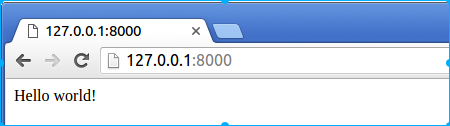
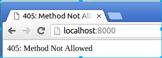
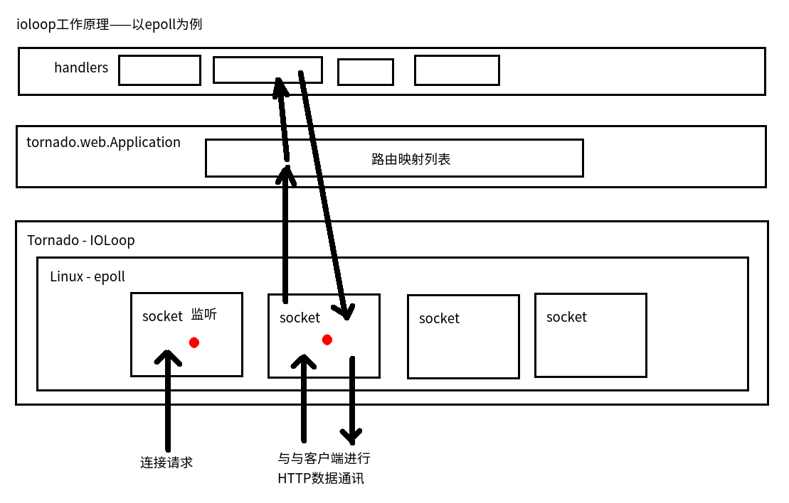

2.2 Hello Itcast
上代码
新建文件hello.py，代码如下：
# coding:utf-8
import tornado.web
import tornado.ioloop
class IndexHandler(tornado.web.RequestHandler):
"""主路由处理类"""
def get(self):
"""对应http的get请求方式"""
self.write("Hello Itcast!")
if __name__ == "__main__":
app = tornado.web.Application([
(r"/", IndexHandler),
])
app.listen(8000)
tornado.ioloop.IOLoop.current().start()
执行如下命令，开启tornado：
$ python hello.py
打开浏览器，输入网址127.0.0.1:8000（或localhost:8000），查看效果： 
代码讲解
1. tornado.web
tornado的基础web框架模块
RequestHandler
封装了对应一个请求的所有信息和方法，write(响应信息)就是写响应信息的一个方法；对应每一种http请求方式（get、post等），把对应的处理逻辑写进同名的成员方法中（如对应get请求方式，就将对应的处理逻辑写在get()方法中），当没有对应请求方式的成员方法时，会返回“405: Method Not Allowed”错误。
我们将代码中定义的get()方法更改为post()后，再用浏览器重新访问（浏览器地址栏中输入网址访问的方式为get请求方式），演示如下：
# coding:utf-8 import tornado.web import tornado.ioloop class IndexHandler(tornado.web.RequestHandler): """主路由处理类""" def post(self): # 我们修改了这里 """对应http的post请求方式""" self.write("Hello Itcast!") if __name__ == "__main__": app = tornado.web.Application([ (r"/", IndexHandler), ]) app.listen(8000) tornado.ioloop.IOLoop.current().start()
Application
Tornado Web框架的核心应用类，是与服务器对接的接口，里面保存了路由信息表，其初始化接收的第一个参数就是一个路由信息映射元组的列表；其listen(端口)方法用来创建一个http服务器实例，并绑定到给定端口（注意：此时服务器并未开启监听）。
2. tornado.ioloop
tornado的核心io循环模块，封装了Linux的epoll和BSD的kqueue，tornado高性能的基石。 以Linux的epoll为例，其原理如下图：

IOLoop.current()
返回当前线程的IOLoop实例。
IOLoop.start()
启动IOLoop实例的I/O循环,同时服务器监听被打开。
总结Tornado Web程序编写思路
- 创建web应用实例对象，第一个初始化参数为路由映射列表。
- 定义实现路由映射列表中的handler类。
- 创建服务器实例，绑定服务器端口。
- 启动当前线程的IOLoop。